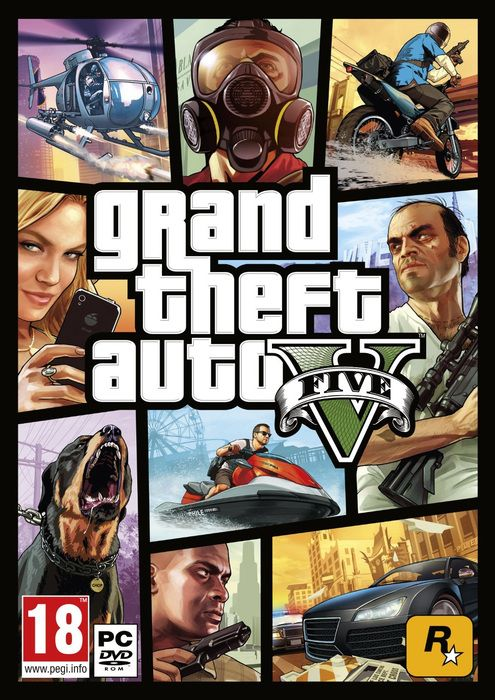

Grand Theft Auto V 66.2 GB
Género: Acción, Mundo abierto
En el año 2004, Michael Townley, Trevor Philips y Brad Snider eran ladrones
de bancos que vivían en Ludendorff, en el estado de North Yankton (basado
en Dakota del Norte). Michael, queriendo huir de esa vida, planea un atraco
falso junto al agente federal corrupto Dave Norton. Dave tenía que matar a
Trevor y arrestar a Brad mientras Michael fingía su muerte, pero todo sale
mal porque Dave, en vez de dispararle a Trevor, le dispara a Brad y Trevor
escapa.